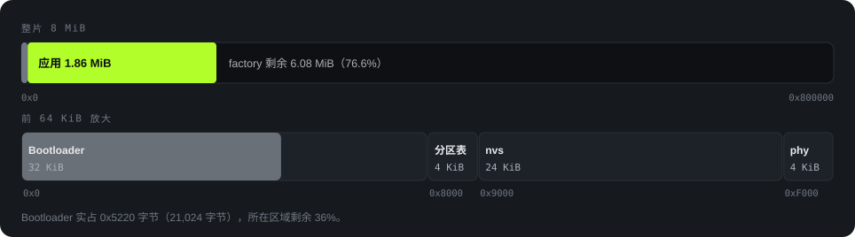

简体中文 · English
Memory
内存分布
构建快照：2026-10-18，提交 284ab00。Flash 和静态 RAM 数据对应此次构建。LVGL 内存池数据来自主机渲染，不是设备实测。KiB 和 MiB 分别表示 1,024 字节和 1,048,576 字节。
Flash：8 MiB 分区布局

| 区域 | 起始 | 大小 | 内容 |
|---|---|---|---|
| Bootloader 区域 | 0x0 |
32 KiB | Bootloader 镜像为 21,024 字节 |
| 分区表区域 | 0x8000 |
4 KiB | 分区表镜像为 3,072 字节 |
nvs |
0x9000 |
24 KiB | 键值存储 |
phy_init |
0xF000 |
4 KiB | PHY 初始化数据 |
factory |
0x10000 |
8,323,072 字节 | 唯一应用分区，占用剩余 Flash。无 OTA 分区 |
应用镜像占 1,948,640 字节，为 factory 的 23.4%。分区剩余容量为 6,374,432 字节（76.6%）。
Flash：应用镜像组成
驻留 Flash 的代码为 825,880 字节，只读数据为 1,014,976 字节，应用描述符为 256 字节。这些段合计 1,841,112 字节。完整应用镜像还包含加载至 RAM 的段、镜像头和填充。
| 组件 | 字节 | 内容 |
|---|---|---|
| 中文字体 16 px | 516,932 | heygo_sc_16，3,872 个字形 |
| ESP-IDF 其他部分 | 439,142 | 其余 SDK 组件和段开销 |
| LVGL | 332,036 | 驻留 Flash 的代码和只读数据 |
| 弹窗徽章 | 201,152 | 4 种 × 4 帧，56 × 56 ARGB8888 |
| 蓝牙控制器和 NimBLE | 168,668 | 蓝牙控制器和主机协议栈 |
| 其他字体和滑雪小人 | 127,789 | heygo_sc_28、heygo_display_20/34/48、heygo_board_sprite |
| Heygo 应用代码 | 55,393 | 应用代码和常量，不含字体及图片 |
RAM：指令与数据共用的内存
链接器报告的指令 RAM（IRAM）与数据 RAM（DRAM）共用区域为 321,296 字节。静态分配占 151,576 字节，即 47.2%。该比例包含 IRAM 代码，不能视为单独的 DRAM 用量，也不代表芯片的全部物理 SRAM 容量。
| 段 | 字节 | 说明 |
|---|---|---|
| IRAM 代码 | 96,852 | 驻留 RAM 的代码，包括中断、Flash 和 FreeRTOS 相关例程 |
.bss |
44,200 | 零初始化数据。LVGL 占 29,180 字节，含 28 KiB 内存池。应用占 9,156 字节 |
.data |
10,524 | 有初值的数据 |
| 链接后余量 | 169,720 | 尚未计入运行时分配，不是实测空闲堆 |
运行时堆分配
以下配置会占用剩余 RAM。队列数据仅计算条目存储，不含 FreeRTOS 控制结构和分配器开销。
| 用途 | 字节 | 计算或配置 |
|---|---|---|
| LVGL 绘制缓冲 | 19,200 | 240 × 40 行 × 2 字节，RGB565 |
| 应用任务栈 | 11,264 | voice 4,096 + coach 4,096 + ble_tx 3,072 |
| LVGL 任务栈 | 7,168 | esp_lvgl_port 默认值 |
| NimBLE 主机任务栈 | 4,096 | CONFIG_BT_NIMBLE_HOST_TASK_STACK_SIZE |
| BLE 发送队列 | 3,936 | 两个队列 × 8 条目 × 246 字节，包含各条目的长度字段 |
| 音频下行队列 | 1,312 | 8 × 164 字节 ADPCM 块 |
上表不是完整堆预算。BLE 缓冲、I2S DMA、coach 事件队列、计时器、任务控制块及其他分配也会占用 RAM。设备测试需测量空闲堆、最低空闲堆和最大可用块。
LVGL 内存池：28 KiB
CONFIG_LV_MEM_SIZE_KILOBYTES=28 为 LVGL 预留 28,672 字节。扣除管理开销后，主机分配器报告的可用容量为 25,752 字节。
.bss 从 25,084 字节增至 29,180 字节。| 测量项 | 数值 | 条件 |
|---|---|---|
| 可用内存池 | 25,752 字节 | 28 KiB 配置，64 位主机 |
| 全程峰值 | 19,728 / 25,752 字节（76.6%） | 主机渲染 |
| 已记录的最大空闲块 | 至少 6,032 字节 | 页面采样 |
| 导轨分配 | 一个常驻 LVGL 对象 | 页面间共用 |
| 增加导轨前的峰值 | 18,760 / 21,656 字节（86.6%） | 早期 24 KiB 配置，提交 5658911 |
页面采样不能确定分配峰值瞬间的最大空闲块。主机指针为 8 字节，ESP32-C3 指针为 4 字节，设备分配大小可能不同。主机数据不能证明设备的内存余量。
每次切换页面都会记录 LVGL 用量、内存池最大空闲块、当前空闲堆和最低空闲堆，供设备内存测试使用。